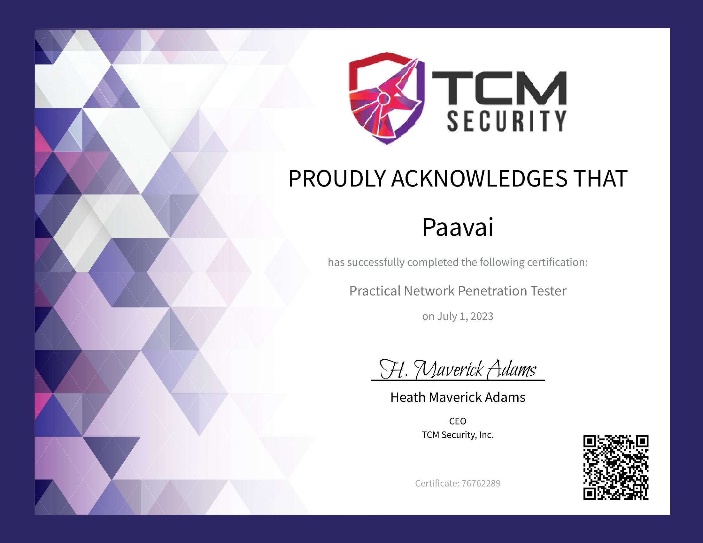
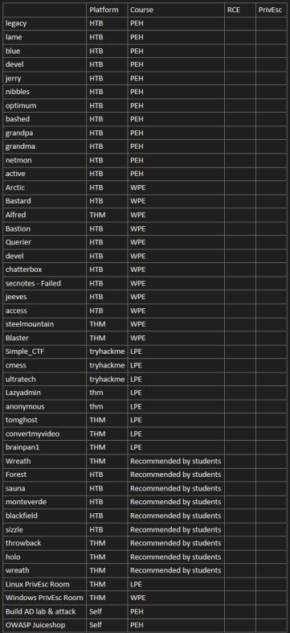
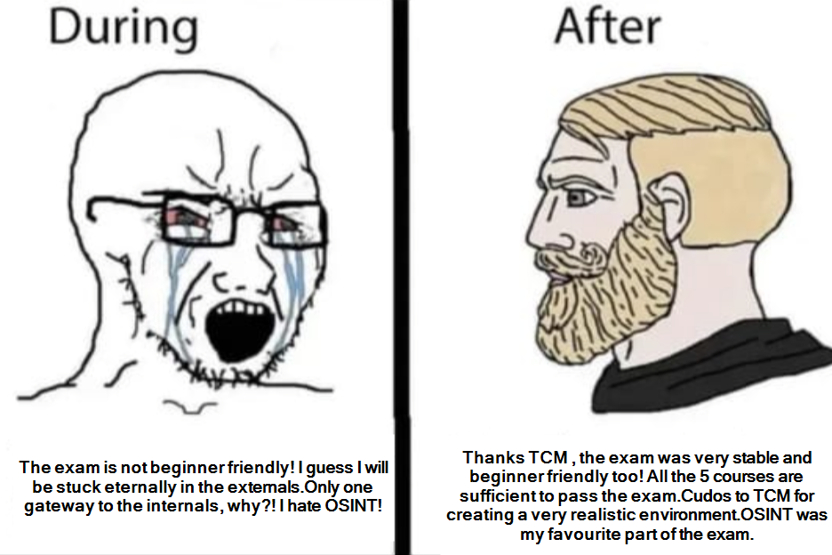

1.Introduction:
First of all, I'm happy that I got PNPT certified! I planned to write a detailed review and also share my journey here in this blog.

2. Overview of the exam:
The exam period is five (5) days, followed by two (2) days to write the professional report. The exam consists of the following phases:
OSINT : Perform Open-Source Intelligence (OSINT) to gather intel on how to properly attack the external/internal network.
External Network : Compromise the external target and find your way into the internal network.
Internal Network : Conduct internal pentest and compromise the domain controller.
Internal Network : Provide a detailed, professionally written report.
Internal Network : Perform a live 15-minute report debrief in front of our assessors, comprised of all senior penetration testers.
The 5 courses required to pass the exam is: (If you are a beginner with no professional experience, some additional practice might be very useful as you can practice whatever you learnt in the courses)
Practical Ethical Hacking (PEH)
Linux Privilege Escalation for Beginners (LPE)
Windows Privilege Escalation for Beginners (WPE)
Open Source Intelligence Fundamentals (OSINT)
External Pentest Playbook (EPP)
2. How I prepared for the exam:
I completed all the 5 courses and also Mayorsec's Movement, Pivoting and Persistence course. The order in which I studied was:
Windows Privilege Escalation (WPE) --> Lindows Privilege Escalation (LPE) --> Practical Ethical Hacking (PEH) --> OSINT (Open Source Intelligence) --> Movements, Pivoting and Persistence (MPP) --> External Pentest Playbook (EPP)
I straight-in jumped into Windows Privilege Escalation course(WPE) since passed eJPTv1 very recenttly that time and hence I wanted to do learn privilege escalation firstly. I see that a lot of people tell you that you can skip the privilege esclation courses. But in contrast I highly recommend completing the privilege escalation courses , you not only learn privilege esclation but also get introduced to various methods to gain foothold . In addition to this the privilege esclation courses will also get you familiar with linux and windows environment and this will greatly help you when you do the active directory labs as well. Apart from this you also can complete the capstone boxes of the PEH (Practical Ethical Hacking) course only if you finish the privielge esclation courses. The order in which you can take the courses will highly depend upon your current knowledge level. In addition to all these courses I also completed the following list of boxes: (⚠️Most of the boxes you will solve while doing the courses itself, the rest of the boxes are suggested by other students and they are great practice⚠️)

3. Additonal Resources:
⚠️Apart from the 5 courses, I would highly suggest to also go through all of the following:⚠️
(i) Additional Pivoting lessons:
The training course only covered metasploit's autoroute+portfwd module for pivoting but there are lot of other tools which we can use for pivoting. It would be great if you learnt all the tools which will be handy in specific situations:
(a) sshuttle
(b) chisel
(c) SSH dynamic, local and remote port forwarding
(d) socat (optional)
Sources to learn from:Wreath(TryHackMe), Pivoting Homelab(In the course ,its already taught how to set this lab, you can simply test the other tools using this lab itself)
(ii) Domain Enumeration:
In the active directory labs we did during the course, we already know the domain name and domain usernames. But this is not the case during a pentest. Some great tools to gather information about the domain:
(a) Crackmapexec - Learn this tool really well. This tool will provide great information such a OS information of the machines in the domain, if SMB signing is disabled/enabled, domain name and the machine name of all the machines in the domain.
(b) LDAP querying - ldapdomaindump, ldapsearch (will provide valuable information about the domain users)
(c) rpcclient
(iii) Post Pivot Enumeration:
In the course methods such as ARP scanning and nmap is discussed, there several other methods available and will come handy in specific situations:
(a) Simple bash script to check the alive hosts in the network and also the ports open in the alive host ( will be very handy in linux machines)
(b) Invoke-Portscan.ps1 (you can download it here) (Comes handy in windows environment)
There are several other methods apart from this, do your own research and see what best suits you.
(iv) Good Understanding of Integrity Levels and Windows UAC:
This is standalone topic itself but to put in simple words each user/process is assigned with a intergrity level. The local administrator account (Administrator) is a high intergrity level user while other authenticated users even if they are a member of administrators group is just a medium integrity level user. Having system level access can open more doors. Understanding of these concepts will assist you during privilege escalation. This article is a great reference.
(v) Windows Credential storage:
Windows stores credentials in various locations. Mimikatz and Impacket's secretsdump.py are great tools and learn to use both tools to extract different credentials.
(vi) Tools to dive deep into:
(a)evil-winrm - Utilizes port 5985 and 5986. It has very easy upload and download functionality which is way easier way of transferring files than the typical smb or http file transfer methods we usually use.
(b)Crackmapexec - Great tool to enumerate a domain.
(c)xfreerdp - We can utilize tsclient to transfer files if we are using xfreerdp and a good alternative to rdesktop.
(d)zap- Zap comes handy in bruteforcing if you don't Burp Suite Pro edition.
(vii) Other Attacks:
(a) AS-REP roasting - Learning this after going through Kerbroasting would be more simple.
(b) Silver Ticket - Its simply forged service ticket attack.
(c) Print spoofer attack - All the potato attacks which utilize the impersonation privileges (SeImperonsatePrivilege) to gain system level access in windows don't work in latest windows version ie Windows 10, Windows Sever 2016/2019. Instead you can utilize Print Spoofer tool to gain system level access even in Windows 10 and Windows server 2016/2019.
(vii) Capstone Boxes:
The boxes I suggest will be a refresher as you will be implementing the concepts you previously learnt from the course and also will help you chain various concepts you learnt previously.(eg:windows privilege escalation+active directory attacks).The capstone boxes are:
(a) TryHackMe (Holo) - You will learn to chain active directory and windows based attacks. Additionally you will also learn some basic antivirus evasion techniques and holo network with introduce you to what the exam might look like that is a combination of internals and externals.
(b) Snaplabs (Conda's Entry Level Pentesting Lab) - If you watch Conda's walthrough video in youtube, he will give a lot of valuable tips about pentesting and this is also like holo will introduce you to basic AV bypassing and UAC bypassing techniques, how to chain attacks, when privilege esclation is required etc. You can view the walkthrough by clicking here
(c) HackTheBox (Sauna) - Will be a refresher to some Active Directory attacks(AS-REP roasting, Kerbroasting and DCsync attack) and OSINT
(d) TryHackMe (Wreath) - Report writing capstone - You can utilize wreath to practice report writing, doing the report for the first time in the exam can be a pain so just practice report writing using wreath. There are lot sample reports available for wreath too.
4. Pre-Exam Preparation and Tips:
This is the very crucial and most important part of your preparation. Following would be my tips:
(i) Revision:
Revise whatever you have learnt. Ofcourse its not possible to revise everything you learnt so focus on Active Directory, OSINT and reporting portions especially. You can also learn the defensive measures for every Active Directory attacks which will help you greatly during report writing.
(ii)Have a Plan:
(a) Active Directory
For Active Directory portion, I planned to first divide the attacks into 2 that is attacks that can be done with domain credentials and without domain credentials. This will help you to understand when to do what. There are several crazy mindmaps out there which can be helpful as well but making one yourself will help greatly, you don't need to make any crazy large mind map, splitting the Active Directory attacks into 2 itself can help you.
Once you get into a domain, you need gather information about the domain users and the domain itself. Decide the tools you will be using to enumerate the domain beforehand too. Using multiple tools can help you gather more information as well.
(b) OSINT
OSINT is actually simple. Just determine what is your goal or what you need to find. Heath talks about password guessing methodology during the course so make sure you have it in your notes as well and you can also make your own wordlist using it will save a lot of time! Another main thing is the choice of tool, decide the tools you will be using.
(c) Privilege Esclation
I simply had a list of some simple linux and windows privilege escalation techniques. I also went through the PEH capstone boxes since it has been a while since I did them.
(c) Pivoting
Pivoting is very simple. Just learn the tools I mentioned previously. The most important thing you can do before pivoting is to gather information about the hosts in the internal network and this will be greatly helpful once you pivot in.
(e) Quick Commmnds
Prepare quick commands for each port, so you don't need to waste your time searching for it. Using multiple tools for paritcular port can gather different informations.
(f) Pentesting Mindset
Lets assume your friend gives his computer to hack, obviously instead of trying some crazy attack, you will be very curious to search for crazy photos, will check the games he installed and will check his browsing history, chats etc. This is the pentesting mindset, the goal of pentesting is just not compromise the machine but to find as much information and all vulnerabilities possible.
(g) ⚠️Don't blindly enumerate!⚠️
Blindly enumerating anything can lead you to nothing. Ofcourse at times you might find something very valuable (for example in a website maybe) but most likely will lead you to nothing. Have plan/goal while you enumerate a particular port or search for something, understand why you are doing it and what the outcomes might be, this will be by greatest tip of all.
5. The Exam Day:
I guess this meme will be very much relatable for everyone who took the exam😉:

I simply sat for the exam once I prepared my mind by solving some boxes like forest,sauna,blackfield and search (in HTB) just few days before the exam. I watched Conda's entry level pentest lab walkthrough video as well which greatly helped me to understand chaining of attacks. In addition to all this I prepared some quick notes which contained some basic enumeration commands for each port, a list that contained Active Directory attacks with and without domain credentials seperately and some basic/comman privilege escalation methods, post pivoting enumeration techniques and some pivoting commands.
It took me almost full 5 days to complete the exam (I had around 11 hours left). I was stuck at multiple points in the exam but I was able to overcome it and successfully complete the exam. My pre-exam notes helped me a lot during the exam. I not only learnt a lot while preparing for the exam but also learnt a lot during the exam. As I already practiced report writing using wreath, I was able prepare my report very easily and completed my debrief later.
6. Conclusion:
I learnt lot in my PNPT journey. Just by completing all the 5 courses itself, I acquired a lot of knowledge. It would be great if the course added some more active directory attacks and information on other pivoting tools. The exam was my first pentesting experience and I tried to treat it more like a real time pentest rather than a exam and tried to find every vulnerability I could. If the the exam included aspects from each of the 5 courses, it would have been more holistic. TCM's discord group is amazing, other students and also the staff are always there to help when you are stuck at some part of the course. This is not the end for me there are miles to go so I will learning more and more.